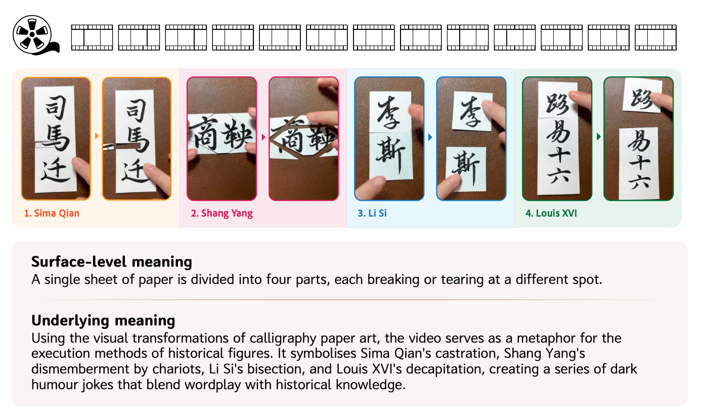
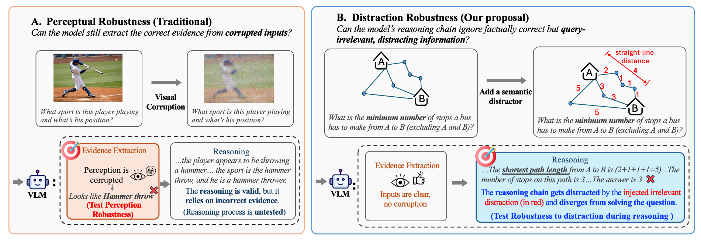
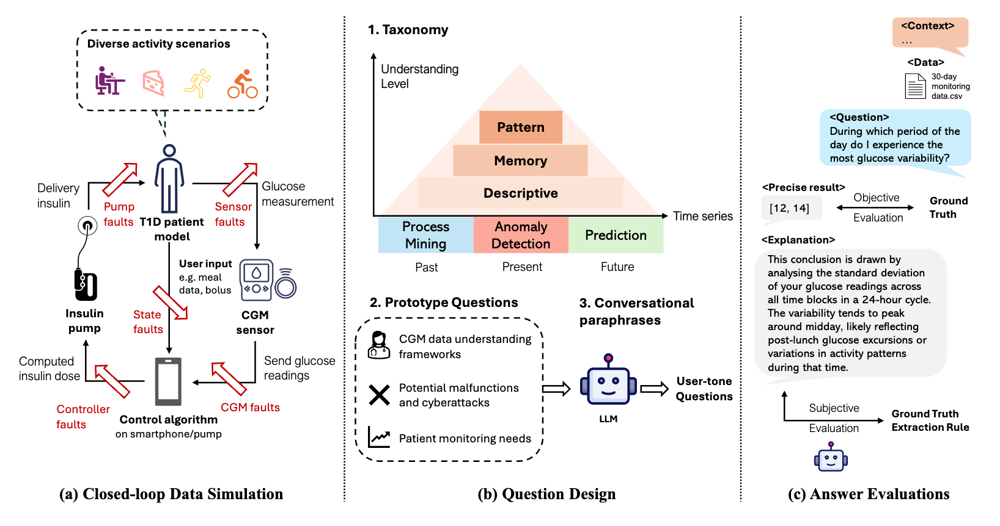
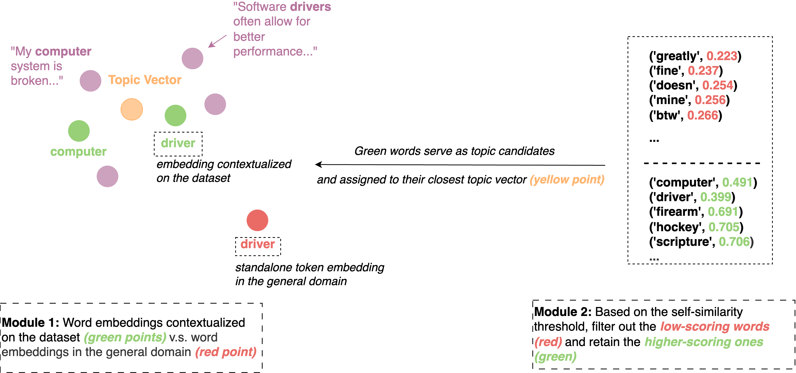
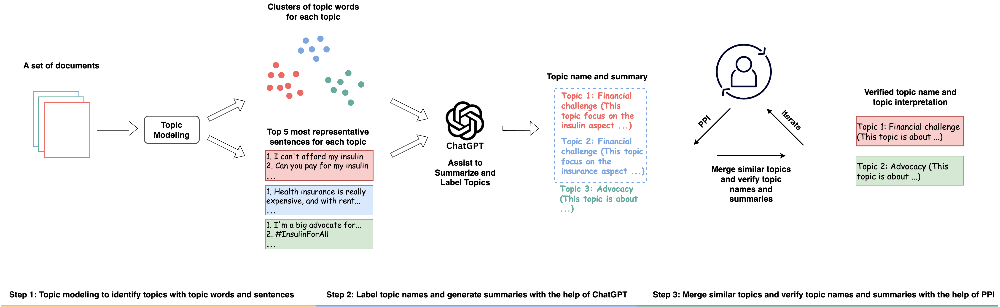

|
Yanan Ma
I joined Mayo Clinic Arizona as an AI Postdoctoral Research Fellow in the Department of Radiology at Dr. Imon Banerjee's lab. I completed my PhD in the Natural Language Processing and Text Mining group at the University of Manchester under the supervision of Prof. Goran Nenadic, Prof. Sabine N Van Der Veer, and Dr. Lamiece Hassan. Before that, I workd in a hospital for three years in the Information Department in China.
My current work focuses on clinical LLM alignment, multimodal reasoning, and retrieval-augmented generation (RAG)-based decision support for breast cancer diagnosis.
During my PhD, I received my PhD scholarship and Turing Scheme funding for a 2025 research internship with Imperial Global Singapore. I also received an Outstanding Graduate Joint Training Program Scholarship between South China Normal University and the University of Glasgow in 2018.
Email /
Google Scholar /
Linkedin /
Github
|
|
Current work
- Aligning large language models for reliable clinical use.
- Advancing multimodal reasoning across medical text and imaging.
- Developing RAG-based decision support for breast cancer diagnosis.
|
Recent News
- 2026 - I joined Mayo Clinic Arizona as an AI Postdoctoral Research Fellow !
- 2025.10.20 - Our paper using CAST on social media data to identify young people's topics of interest for T1DM self-management was published in JMIR!
- 2025.02-05 - I worked at Imperial Global Singapore as a research intern for the IN-CYPHER project!
- 2025.01.22 - Our paper (CAST) was accepted by NAACL'25 main!
- 2024.03.07 - Our review paper on type 1 diabetes self-care was accepted by JMIR Pediatrics and Parenting!
- 2023.06.12 - Our team was selected as the semi-finalist in the Wellcome Data Science Ideathon2023!
|
|

|
Reading Between the Frames: Interpreting Implicit and Non-literal Meaning in Social Media Videos
Yang Wang, Yanan Ma, Yiqi Liu, Zi Yan Chang, Chi-Li Chen, Chia-Yi Hsiao, Tyler Loakman, Aline Villavicencio, Chenghao Xiao, Chenghua Lin
arXiv preprint, 2026
paper /
code
We introduced DrivelHub+, a benchmark of 1,000 social media videos for evaluating whether video-language models can interpret implicit, non-literal, and rhetorically layered meanings.
|
|

|
Are Reasoning Vision-Language Models Robust to Semantic Visual Distractions?
Yizheng Sun, Mochuan Zhan, Yanan Ma, Jia Tong See, Yifan Wang, Ziyi Wang, Hao Li, Yang Cui, Wenhao Cai, Jingyu Sun, Chenghua Lin, Riza Batista-Navarro, Jingyuan Sun
arXiv preprint, 2026
paper /
code
We introduced Distract-Bench to evaluate the robustness of reasoning vision-language models to meaningful but task-irrelevant visual cues.
|
|

|
HealthLoopQA: A Context-Aware Question Answering Benchmark for Interpreting Wearable Monitoring Data in Diabetes Care
Yuchen Niu, Yanan Ma (Co-first author), Srinivasan Nandakumar, Maolin Chen, Viktor Schlegel, Anil Anthony Bharath, Siew Kei Lam
Submitted to EMNLP 2026, 2026
We introduced a context-aware benchmark for evaluating LLM reasoning over long-term wearable monitoring data in diabetes care.
|
|

|
CAST: Corpus-Aware Self-similarity Enhanced Topic modelling
Yanan Ma, Chenghao Xiao, Chenhan Yuan, Sabine N van der Veer, Lamiece Hassan, Chenghua Lin, Goran Nenadic
NAACL main, 2025
paper /
code
We introduced a new topic modelling approach, CAST, that builds upon candidate topic word embeddings contextualized on the dataset, and a novel self-similarity-based method to filter out less meaningful tokens.
|
|

|
Investigating Social Media Use by Young People to Self-Manage Type 1 Diabetes Mellitus: Large-Scale Analysis of Social Media Discussions Using Topic Modeling
Yanan Ma, Lamiece Hassan, Sabine N van der Veer, Goran Nenadic
Journal of Medical Internet Research, 2025
paper /
code
We curated a corpus of posts from young people with type 1 diabetes from social media, and identified their topics of interest using CAST.
|
|
|
Experiences and Views of Young People and Health Care Professionals of Using Social Media to Self-Manage Type 1 Diabetes Mellitus: Thematic Synthesis of Qualitative Studies
Yanan Ma, Kate Law, Lamiece Hassan, Goran Nenadic, Sabine N van der Veer
JMIR Pediatr Parent, 2024
paper
We thematic synthesized young people and healthcare professionals' views and experiences of using social media to self-manage type 1 diabetes.
|
|